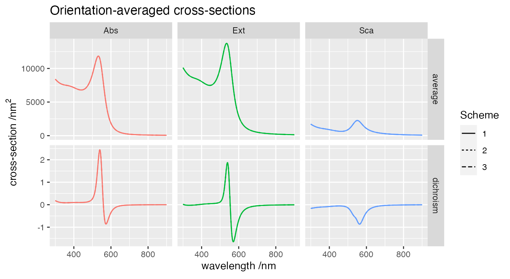

Comparison of schemes
28 January, 2022
Source:vignettes/102_comparison_schemes/102_comparison_schemes.Rmd
102_comparison_schemes.RmdObjective
This example checks for consistency of the four calculation schemes for the calculation of far-field cross-sections. The structure consists of four gold spheres in water arranged in a helix.
This simulation uses the following template
ModeAndScheme 2 {scheme}
MultipoleCutoff 8
Wavelength 300 900 300
Medium 1.7689 # epsilon of water
Incidence 0.0 0.0 0.0 # default along z
OutputFormat HDF5 xsec_{scheme}
Scatterers 4
Au 100.0000 0.00000 -30 20.0
Au 80.9017 58.77853 -10 20.0
Au 30.9017 95.10565 10 20.0
Au -30.9017 95.10565 30 20.0where {scheme} is replaced by 0,1,2,3 in each separate run. The results are stored in separate output folders and collated for comparison. Note that Scheme=0 does not calculate orientation-averaged quantities.
Orientation-averaged results
We first check that orientation-averaged cross-sections are consistent for Schemes 1 to 3,
Rows: 24,381
Columns: 6
$ scheme <chr> "1", "1", "1", "1", "1", "1", "1", "1", "1", "1", "1", "1",…
$ wavelength <dbl> 300, 300, 300, 300, 300, 300, 300, 300, 300, 302, 302, 302,…
$ crosstype <chr> "Abs", "Abs", "Abs", "Abs", "Abs", "Abs", "Abs", "Abs", "Ab…
$ variable <chr> "total", "I1", "I2", "I3", "I4", "I5", "I6", "I7", "I8", "t…
$ dichroism <dbl> 1.823040e-01, 3.157315e-01, -2.057442e-01, 3.855385e-02, 3.…
$ average <dbl> 8.400046e+03, 2.048282e+03, 3.534238e+03, 2.132195e+03, 5.8…
Fixed-orientation results
Similarly, we check the linear polarisation cross-sections at fixed orientation,
Rows: 32,508
Columns: 8
$ scheme <chr> "1", "1", "1", "1", "1", "1", "1", "1", "1", "1", "1", "…
$ wavelength <dbl> 300, 300, 300, 300, 300, 300, 300, 300, 300, 302, 302, 3…
$ crosstype <chr> "Abs", "Abs", "Abs", "Abs", "Abs", "Abs", "Abs", "Abs", …
$ variable <chr> "total", "I1", "I2", "I3", "I4", "I5", "I6", "I7", "I8",…
$ polarisation1 <dbl> 8064.382572, 887.907883, 3655.980635, 1796.189835, 1302.…
$ polarisation2 <dbl> 7979.054678, 1893.579424, 1601.175597, 3198.189754, 713.…
$ dichroism <dbl> 85.327894, -1005.671541, 2054.805038, -1401.999920, 588.…
$ average <dbl> 8021.718625, 1390.743653, 2628.578116, 2497.189795, 1007…
Last run: 28 January, 2022